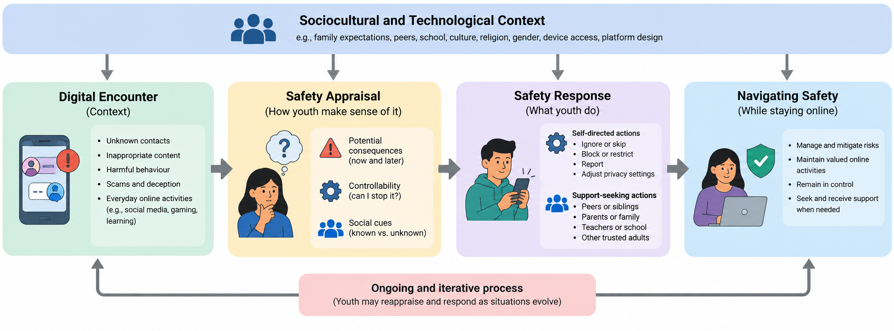
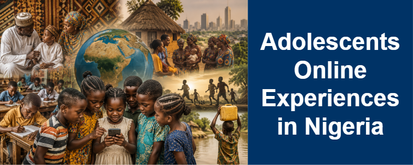
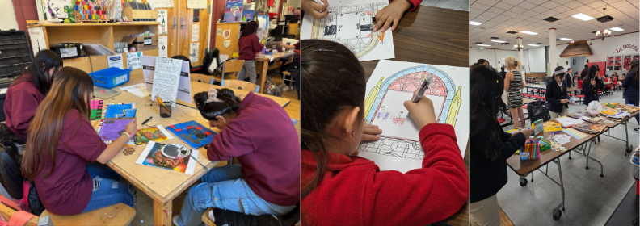
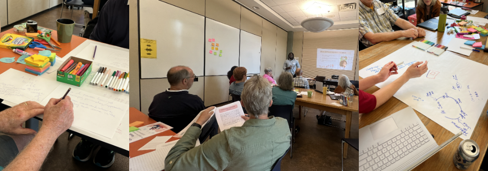
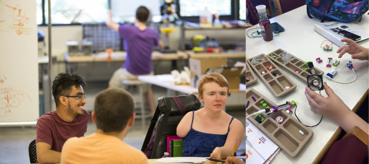
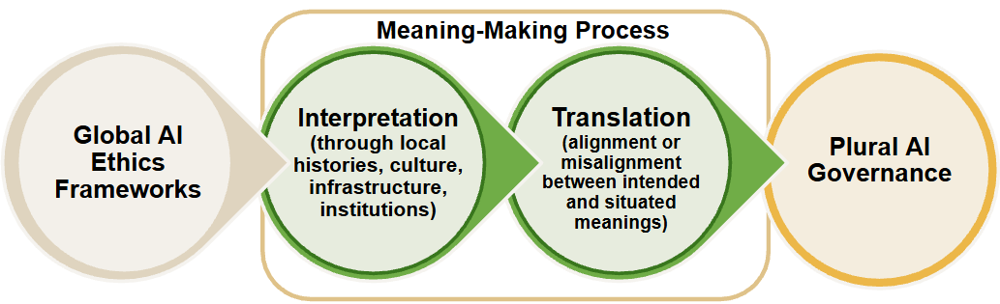
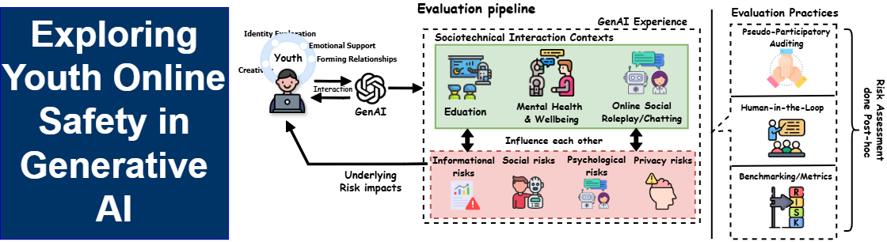

👋 Hi there! I’m a 5th year Ph.D. Candidate in Computer Science & Engineering at the University of Notre Dame,
where I am advised by Dr. Karla Badillo-Urquiola in the EPOCH Research Lab.
My research lies at the intersection of Human-Computer Interaction (HCI), online safety and privacy, and Human-Centered AI .
At the core of my work is a broader question: How can we design technologies that account for the people, values, and contexts that dominant approaches to technology design often overlook?
I explore this question through two interconnected areas:
First, I study Youth Online Safety, particularly how young people understand, experience, and navigate safety as emerging technologies reshape their digital lives.
Rather than treating youth only as people to protect, my work examines their lived experiences and creates opportunities for them to help shape the technologies and policies intended to support them.
Second Contextualizing Technology, I study how technologies and their underlying values can be contextualized for communities whose sociocultural realities are often underrepresented in technology design, with a particular interest in the Global South.
This work examines what happens when assumptions about safety, privacy, AI ethics, and responsible technology travel across cultural contexts, and how local knowledge and community values can inform more contextually grounded approaches to technology design and governance.
Across these areas, I use qualitative, participatory, and mixed-method approaches to understand not only how people experience technology, but how their perspectives can meaningfully shape what we design, how we evaluate it, and how we govern it.
Oct 2026:
My dissertation proposal was selected for the CSCW 2026 Doctoral Consortium!
🤝
Oct 2026:
I will be co-organizing a Privacy Workshop at CSCW 2026.
Looking forward to seeing you there!
🎉
Oct 2026:
Our paper,
“Lost in Translation: How Universal Ethical Values Fail to Translate Across Global Contexts”,
has been accepted to #AIES 2026 and will be presented in Malmö, Sweden!
🎙️
Sept 2026:
I served on a Meta expert panel on youth online safety in Nigeria.
🎉
Sept 2025:
Received AccessComputing Richard Tapia Travel Grant.
📝
Aug 2024:
Published blog post at CDT on teen safety policies.
🥇
May 2024:
Winner of 2024 CRA-WP Social Media Competition.
🎉
May 2024:
Received the 2024 CRA-WP Grad Cohort Travel Grant!
July 2023:
Received the AccessComputing Richard Tapia Travel Grant 2023!
🥇
June 2023:
Received the Graduate Justice Fellowship 2023!
[
Link
]
🎉
June 2023:
Received the HCIC Doctoral Student Travel Grant and presented
a poster at
HCIC 2023
.
🥇
April 2023:
Received the TEEWS Summer Fellowship 2023!
🎉
March 2023:
Presented my position paper titled
"Adolescent Online Safety and Privacy Interventions for
Social Virtual Reality"
PDF
at the 2023
CHI Privacy Workshop
.
C9.
Lost in Translation: How Universal Ethical Values Fail to Translate Across Global Contexts
Ozioma C. Oguine,
Munachimso B. Oguine, Cesar Cervera, Jenny Yang, Pooja Voladoddi,
Mario Rodriguez, Saif Eddin Bani Malhem, Karla Badillo-Urquiola, Daricia Wilkinson
AIES '26
Proceedings of the 2026 AIES Conference on AI, EThics and Society
[DOI]
·
[Preprint]
C8.
"Ethical for Whom?" Examining Cross-Cultural Perspectives on AI Values for the Global Majority
Jenny Yang, Cesar Cervera, Ozioma C. Oguine, Munachimso B. Oguine, Pooja Voladoddi,
Mario Rodriguez, Saif Eddin Bani Malhem, Karla Badillo-Urquiola, Daricia Wilkinson
HFES '26
ASPIRE 2026 International Annual Meeting of the Human Factors and Ergonomics Society (HFES)
[DOI]
·
[Preprint]
C7.
Who Gets to Define Safety? A Systematic Review of How Generative AI
Research Addresses Youth Online Safety
Ozioma C. Oguine,
Adriana Alvarado Garcia,
Michael Muller,
and Karla Badillo-Urquiola
CHI '26
Proceedings of the 2026 CHI Conference on Human Factors in Computing Systems
[DOI]
·
[Preprint]
C6.
Red Teaming LLMs as Socio-Technical Practice:
From Exploration and Data Creation to Evaluation
🥇 Honorable Mention
Adriana Alvarado Garcia,
Ruyuan Wan,
Ozioma C. Oguine,
and Karla Badillo-Urquiola
CHI '26
Proceedings of the 2026 CHI Conference on Human Factors in Computing Systems
[DOI]
·
[Preprint]
C5.
Participation and Power: A Case Study of Using Ecological Momentary
Assessment to Engage Adolescents in Academic Research
Ozioma C. Oguine,
Elmira Rashidi,
Pamela J. Wisniewski,
and Karla Badillo-Urquiola
IDC '26
Proceedings of the 25th Interaction Design and Children Conference
[DOI]
·
[Preprint]
C4.
A System of Care, Not Control: Co-Designing Online Safety and
Wellbeing Solutions with Guardians ad Litem for Youth in Child Welfare
Johanna Olesk,
Ozioma C. Oguine,
Mariana Fernandez Espinosa,
Alexis B. Peirce Caudell,
and Karla Badillo-Urquiola
GROUP ' 27
Proceedings of the ACM on Human-Computer Interaction
[DOI]
·
[Preprint]
2025
C3.
‘Teens Need to Be Educated on the Dangers’: Digital Access,
Online Risks, and Safety Practices Among Nigerian Adolescents
🏆 Best Paper
Munachimso Oguine,
Ozioma Oguine,
Karla Badillo-Urquiola,
and Oluwasogo Okunade
Ozioma C. Oguine,
Yaxing Yao,
and Karla Badillo-Urquiola
CHI '23
Workshop on Privacy Interventions and Education (PIE)
Poster Presentations
2023
P2.
Co-Designing with Foster Youth Online Safety Interventions
Ozioma C. Oguine,
Ruyuan Wan,
and Karla Badillo-Urquiola
15th Annual CSE Student Poster Contest,
University of Notre Dame
2022
P1.
Co-Designing with Foster Youth Online Safety Interventions
Ozioma C. Oguine,
Ruyuan Wan,
and Karla Badillo-Urquiola
Lucy Family Institute for Data and Society Fall Symposium,
University of Notre Dame
Projects
My research explores how young people experience and navigate online
technologies, how communities can participate in designing safer digital
environments, and how emerging AI systems can better reflect diverse
values and sociocultural contexts. My projects span three interconnected
areas: Online Safety, Participatory Design, and AI Ethics & Safety.
Understanding how young people experience, define, and navigate safety
across different digital and sociocultural contexts.

How Nigerian Youth Conceptualize Online Safety (Interview Study)
2026
Understanding how Nigerian youth define, experience, and negotiate
online safety within their everyday lives.
Online SafetyNigerian YouthInterviewsHCI
Many dominant approaches to youth online safety are built around
assumptions about what constitutes risk, what young people need
protection from, and what resources are available to help them
stay safe. These assumptions may not fully reflect how safety is
understood and practiced across different sociocultural contexts.
In this ongoing interview study, I work directly with Nigerian
youth to understand how they conceptualize online safety, the
experiences they consider safe or unsafe, and the strategies they
use to navigate digital spaces. The project also examines how
factors such as family, peers, technology access, and local
sociocultural expectations shape young people's understandings
and practices around online safety.
This research contributes toward developing more culturally
grounded approaches to youth online safety that begin with young
people's lived experiences rather than assuming that existing
definitions of safety apply uniformly across contexts.

Digital Access, Online Risks, and Safety Practices Among Nigerian Adolescents
2025
Examining how Nigerian adolescents access the internet, encounter
online risks, and respond to safety challenges.
Online SafetyNigeriaSurveyDigital Access
This project examined the online experiences of 409 secondary
school adolescents in Nigeria's Federal Capital Territory. We
investigated how young people access digital technologies, the
online risks they encounter, the strategies they use to respond
to those risks, and the people they turn to for support.
The study also examined adolescents' own recommendations for
improving online safety. Rather than considering risk in
isolation, the project connected young people's safety practices
to their access to technology, available support systems, and
confidence in the strategies available to them.
Outcome:
Published at AfriCHI 2025 and received the
Best Paper Award.
Understanding the Online and Offline Experiences of Youth in Need of Services
2024
Analyzing how vulnerable youth use online spaces to discuss,
navigate, and seek support for adverse life experiences.
Online SafetyCHINSYouthOnline Communities
This project investigated the experiences of youth who
self-identified as Children in Need of Services (CHINS),
including youth connected to the child welfare and juvenile
justice systems and youth with incarcerated parents.
We analyzed young people's conversations on an online peer-support
platform to understand how they discussed adverse experiences in
their offline and online lives. The project examined both sides
of young people's internet use: online spaces could provide
opportunities for connection and support while also introducing
or intensifying risks in their lives.
Outcome:
Published in the Proceedings of the ACM on
Human-Computer Interaction (2025).
Participatory Design
Working with youth and the people who support them to collaboratively
identify needs and envision technologies grounded in their experiences.
Co-Designing with Youth in South Bend's Juvenile Justice System
2026
Engaging teens in the juvenile justice system as design partners
during a participatory design fellowship.
I served as a mentor in a South Bend community fellowship that engaged justice-involved youth in exploring youth violence and ways to
strengthen their communities. Through conversations and mentoring sessions, we worked with youth to
reflect on their experiences, concerns, and aspirations for their neighborhoods.
As part of the fellowship, we also facilitated participatory design activities using zine-making as a
creative form of self-expression. Youth used the zines to communicate their experiences and perspectives and to envision
changes they wanted to see in their communities. The project provided a space for youth to move beyond being recipients of community
interventions and instead express their own ideas about the issues affecting them and their neighborhoods.

Co-Designing Digital Storytelling with K-8 Kids
2026
Exploring how K–8 youth can use storytelling and co-design to document
their experiences and contribute to the preservation of community histories.
This community-engaged project involved a co-design workshop with K–8 students at St. Adalbert School
as part of a broader restoration initiative. Through hands-on storytelling and design activities,
students reflected on their experiences and created their own narratives about the spaces, histories,
and stories that were meaningful to them.
The workshop explored how these youth-created stories could inform the design of digital archives
for preserving and sharing community history. Rather than determining in advance what stories should
be preserved or how they should be represented, the co-design process centered young people as storytellers
whose perspectives could shape both the content and design of future digital archives.
More broadly, the project examines how participatory design can connect youth storytelling,
community history, and digital preservation, creating opportunities for young people to contribute
to how the histories of their communities are documented and remembered.

Co-Designing Online Safety with Guardians ad Litem
2025
Co-designing technology-based approaches to online safety and
wellbeing for youth in the child welfare system.
Youth in the child welfare system often rely on a network of
adults—including family members, caseworkers, and advocates—to
support their safety and wellbeing. Yet many online safety
technologies assume that parents are the primary people
responsible for managing young people's digital experiences.
In this project, we conducted a two-part participatory design
workshop with 10 Guardians ad Litem, court-appointed advocates
for youth in the child welfare system. We explored the challenges
GALs encounter when supporting young people's online safety and
collaboratively envisioned technology-based solutions responsive
to the realities of the child welfare ecosystem.
Outcome:
Published in Proceedings of the ACM on Human-Computer
Interaction (2026).

Computing Mentorship with Youth with Disabilities
2025
Supporting youth with disabilities in developing foundational
programming and computational thinking skills.
MentoringAccessibilityComputing EducationYouth
In this mentorship program, I worked with young people with
disabilities to introduce foundational programming concepts and
strengthen their understanding of computational logic. The
program emphasized learning through accessible, hands-on
activities rather than treating programming as simply learning
syntax.
Beyond technical instruction, the experience focused on creating
a supportive environment in which students could explore
computing, ask questions, work through problems, and build
confidence in their ability to engage with technology.
AI Ethics & Safety
Examining how values, culture, and stakeholder perspectives shape
responsible AI design, evaluation, and governance.

Cultural Grounding in AI Ethics
2026
Investigating how AI experts across cultural contexts interpret
ethical values, risks, and responsible AI governance.
AI EthicsCultureAI GovernanceExpert Interviews
AI ethics frameworks frequently invoke principles such as
fairness, privacy, transparency, explainability, and bias as
though these concepts have stable meanings across contexts.
Yet ethical values can be interpreted differently depending on
cultural norms, histories, institutions, and local experiences
with technology.
In this interview study, we engage AI researchers, practitioners,
and other experts from multiple cultural contexts to examine how
they understand and define AI ethics from their own cultural
standpoints. The study explores how participants interpret key
ethical values, how they understand the risks and opportunities
associated with AI in their contexts, and what they believe
culturally grounded AI governance should look like.
The broader goal is to understand what happens when seemingly
universal AI ethics principles travel across contexts and how AI
design and governance can better recognize plural forms of
knowledge, values, and lived experience.
Outcome:
Published at AIES 2026

Envisioning Youth Safety in the Age of Generative AI
2026
Understanding how stakeholders around youth envision safety and
manage emerging risks in an increasingly AI-mediated digital world.
Generative AIYouth SafetyStakeholdersInterviews
Generative AI is introducing new opportunities for young people
while also complicating existing questions about privacy,
harmful content, misinformation, interaction with AI systems,
and responsibility for keeping youth safe.
In this interview study, I engaged stakeholders who work with or
around young people to understand how they envision youth safety
in the age of Generative AI. The study examines the risks and
opportunities stakeholders associate with these technologies,
how they currently manage safety concerns, and where they believe
existing approaches fall short.
The project aims to identify how responsibility for youth AI
safety is distributed across young people, families, educators,
technology companies, policymakers, and other stakeholders—and
what more collaborative approaches to safety might look like.
Service
I contribute to the HCI and computing research communities through
peer reviewing, academic and community service, and mentorship.
Supported students with programming language concepts
and course assignments through individual and small-group
assistance.
Helped clarify course concepts and troubleshoot challenges
encountered in assignments.
Assisted with grading assignments, quizzes, and exams
and provided feedback on student work.
University & Community Service
Notre Dame
Student Researcher - Center for Social Concerns
Participated in community-engaged scholarship with residents
of the South Bend area, collaborating on research initiatives
addressing local challenges and exploring how academic research
can inform community-driven approaches to youth and technology safety.
U. Abuja
Public Relations Officer - Student Union Government
Represented and advocated for more than 40,000 undergraduate
students, facilitated communication between students and university
administration, organized campus-wide initiatives, and helped
communicate student concerns to university leadership.
Mentoring
CS Mentor
Notre Dame & Illinois School for the Visually Impaired (ISVI)
Mentee: Kiorah Whitaker
Graduate Mentor
Institute for African American Mentoring in Computing Sciences
Mentee: Kamryn Bailey, Georgia State University
Graduate Mentor
EPOCH Research Lab, University of Notre Dame
Undergraduate Mentees: Cassandra Barco, Danielle Radford, Dominic Blacno,
Eliza Thayer, and Matthew Chou
Honors & Awards
Selected research awards, fellowships, academic honors,
scholarships, and travel grants.